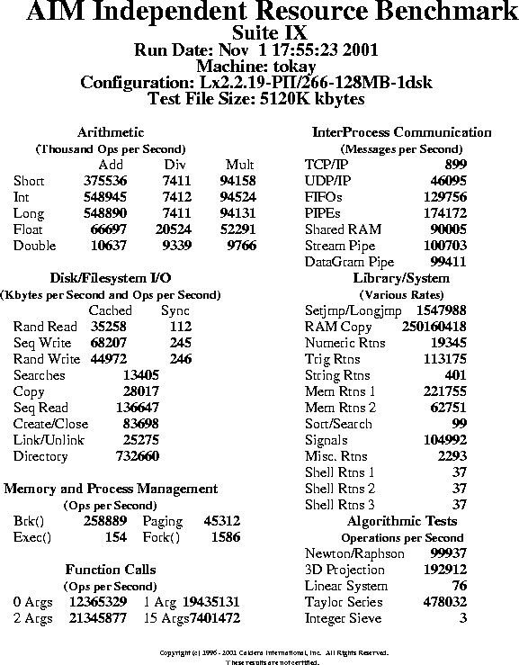

Copyright (c) 1996 - 2001 Caldera International, Inc. All Rights Reserved.
"AIM Benchmark" and "Hot Iron Awards" are trademarks of Caldera International, Inc. (Caldera) in the USA and other countries. Caldera allows use of "AIM" and "AIM Benchmarks" when presenting performance results, but places restrictions on this to promote comparability of results and avoid confusion. Results presented using the terms "AIM" and "AIM Benchmark" must be obtained with an official version of the benchmark, as designated by Caldera, using one of the standard distributed workload. No right or license is granted hereunder to use the Caldera trademarks for modified benchmark versions or for other purposes without the prior written permission of Caldera.
"UNIX" is a trademark of the The Open Group.
The documentation, consisting of this user guide, is essentially the
original documentation developed by AIM Technology, lightly edited to remove
references to no longer relevant restrictions and services.
| CHAPTER I | 1 |
| INTRODUCTION | 1 |
| HOW THE BENCHMARK WORKS: A SYNOPSIS | 2 |
| GLOSSARY | 3 |
| KEY TO SYMBOLS | 4 |
| CHAPTER 2 | 5 |
| GETTING STARTED: INSTALLATION AND SET UP (S9setup) | 5 |
| MINIMUM SYSTEM REQUIREMENTS | 5 |
| INSTALLING THE BENCHMARK | 7 |
| EDITING s9workfile | 8 |
| FILESIZE: PARAMETER | 8 |
| RUNNING THE S9setup SCRIPT | 9 |
| MAKING THE BENCHMARK: make | 13 |
| CHAPTER 3 | 14 |
| STARTING THE BENCHMARK: | |
| RUNNING THE singleuser PROGRAM | 14 |
| STOPPING THE BENCHMARK | 17 |
| PREMATURE TERMINATION OF THE BENCHMARK: | |
| TROUBLESHOOTING | 18 |
| CHAPTER 4 | 19 |
| BENCHMARK RESULTS: | |
| THE BENCHMARK'S OUTPUT FILES | 19 |
| SPREADSHEET OUTPUT FILE: suite9.ss | 19 |
| DETAILED OUTPUT: logfile.suite9 | 21 |
| GENERATING REPORTS: rpt9 | 22 |
| ADDING CUSTOM TESTS: C Language & Shell Scripts | 24 |
| EVALUATING THE BENCHMARK RESULTS | 25 |
| APPENDIXES | 26 |
| THE BENCHMARK'S TESTS: s9workfile | 26 |
| A SAMPLE s9workfile | 29 |
| THE BENCHMARK FILES | 31 |
Although a computer system has many different components, many benchmarks test a system as a whole and provide only one performance measurement.
The AIM Independent Resource Benchmark exercises and times each component of a UNIX computer system, independently. The benchmark uses 58 subtests to generate absolute processing rates, in operations per second, for subsystems, I/O transfers, function calls, and UNIX system calls.
Test results can be used to compare different machines on a test-by-test basis or to measure the success or failure of system tuning and configuration changes on a single system. This benchmark yields specific results on a per-test basis.
AIM previously combined the results from this benchmark with the results of the Workstation Benchmark, Suite VI and Multiuser Benchmark, Suite VII, to generate a Certified Workstation Report and Certified Multiuser Report, respectively.
The following paragraphs summarize the benchmark process.
The benchmark's workfile, s9workfile, lists each of the program's 58 tests. The main purpose of s9workfile is to turn tests off. The s9workfile provided with this distribution was used for certified workstation/multiuser reports. An unmodified version of this file will cause the benchmark to run all 58 tests. If you are running the benchmark for internal testing only, you may alter s9workfile to include only the tests that are relevant to your test environment.
After you review s9workfile (and edit it, if desired), run the setup script (S9setup). Accept the script's defaults for variables, for example, compiler options, or enter new values. When you have responded to all of the script's queries, enter make to complete the benchmark setup (make generates executables).
Run the singleuser program and answer prompts to start the benchmark.
The benchmark
To review the test results, examine suite9.ss, and use rpt9 to generate a report. If desired, rerun S9setup using different compiler options or after reconfiguring the system under test.
benchmark - A program that tests how computer systems perform.
Makefile - Contains instructions and rules to the compiler and linker regarding how to build the benchmark executable program from the source files.
operation - One subset of a test. For example, in the add_int test, an operation would be one integer addition.
PostScript - A page-description language that uses text to describe graphical images.
rpt9 - Executable program that generates a PostScript report from the benchmark results (suite9.ss).
S9setup script - Bourne shell script program that guides users through the steps required to gather the target Open system information needed to set up the test environment and build the benchmark.
shell script - File containing a sequence of UNIX commands to be executed when the name of the file is typed on the command line.
singleuser - Executable program for the AIM Independent Resource Benchmark - Suite IX.
system resources - System resources include: ram, disk storage, I/O subsystems, and CPUs.
test - One functional analysis of multiple operations. Add_int may have 106 inter operations.
test environment - The functions, applications, and system resources that the benchmark exercises on a system to test performance.
| SYMBOL | DEFINITION |
| $ | system prompt |
| # | system prompt when logged on as root |
| <> | required parameters |
| [] | default value or range of legal values |
| boldface | script names or program names |
| italics | system prompts, file names, or directory names |
| boldface, courier | user input |
| root | root or superuser |
The following steps summarize the installation and set up procedure for the
benchmark:
This benchmark will compile and run on most POSIX-compliant UNIX
systems. All source code is in ANSI C. To assure its portability, the program
uses standard system calls. Each test system must meet the following
minimum requirements:
Make sure your swap file is large enough. A small swap file will severely affect your system performance, particularly when the system is saturated by work load. Most factory default recommendations are too small for a successful benchmark run. It is recommended your swap file size be at least double your physical memory size.
Semaphores are critical kernel resources needed in our benchmark's IPC tests. Depending on the system configuration, you should increase the semaphore parameters accordingly. The most optimal semaphore parameters for the benchmarks are dependent on the operating system, configuration, and benchmark mix, and can best be determined by trial and error.
It is recommended that you run the benchmark with a X-window or shell tool and leave the console untouched. The window processes will take up some system resources, but the performance impact is minimal and the window will be extremely helpful if you need to stop the benchmark before it finishes. For further details, see EDITING s9workfile on page 8.
With this distribution, Caldera is making available, under the GPL, formerly proprietary technology developed by AIM Technology, Inc. Please refer to the beginning of this document for additional restrictions applying when presenting results.
Starting with the open source release of this benchmark, AIM Suite IX is
provided only as a compressed tar archive. To unpack it
$ zcat s9110.tar.Z | tar xf -
$ cd s9110
On GNU based systems, use gzip -cd instead of zcat
The benchmark includes 58 tests. Tests are listed in s9workfile, a file that the benchmark reads each time the benchmark is run. Each test repeats an operation, system call, or I/O transfer for a specified time (user specifies test run time at time of benchmark set up).
NOTE: Before you alter s9workfile, use the copy command and save a copy of the original for future reference.
You may want to remove a test from s9workfile to exclude it from future benchmark runs. To remove a test from the benchmark, enter a pound sign, #, at the beginning of the line. Whenever you alter s9workfile, enter comment lines to document your changes. Comment lines begin with a pound sign (#).
The benchmark creates temporary files for disk tests. The size of these
temporary files is controlled by the FILESIZE: parameter in s9workfile.
To change the value for this parameter, edit the entry in s9workfile.
The format for this entry is as follows:
FILESIZE: <temporary file size>
There must be a space between the FILESIZE: keyword and the size value.
You must specify the size in integers and in kbytes or megabytes (k or K and
m or M), for example:
FILESIZE: 5K
If the FILESIZE is 2K, the benchmark will create 2K temporary files. If the FILESIZE is 5K, the benchmark will create 5K temporary files.
During the benchmark run, there may be one or two temporary files at any given time. One temporary file exists for the duration of the benchmark run, and other temporary files will appear and disappear as the benchmark progresses.
The S9setup script used to set up the benchmark requires the
following information:
| Variable | Description |
|---|---|
| Compiler | Name of compiler executable. Set $PATH to find this executable and all associated files. |
| Compiler options | Enter the compiler options used to optimize code generation. Additionally, because the benchmark is written using ANSI and POSIX compliant code, you must invoke the appropriate compiler options (for example, -ansi -xpg3plus) for a given compiler. |
| Linker options | S9setup must link the networking libraries for the interprocess communication tests. On some machines the user must specify -lsocket and possibly -Insl. If a platform requires links to special libraries (for example, -lmalloc) or more specific linking options, use this option to name the libraries. |
| Bourne Shell | Identify location of Bourne shell executable (usually /bin/sh). |
To start the script, run S9setup as root. Enter S9setup at the system prompt
and press RETURN:
# S9setup
The following is a transcript of an actual S9setup run:
AIM Independent Resource Benchmark - Suite IX S9setup Copyright (c) 1996 - 2001 Caldera International, Inc. All rights reserved ------------ INTRODUCTION ----------- This script guides you through the steps needed to tailor the AIM Independent Resource Benchmark - Suite IX to your environment. It will ask you a series of questions to identify the components of the System Under Test (SUT). As each question is displayed on the screen, you can accept the default value that is enclosed in brackets (e.g. [default value] ), or enter the correct value. At any point during the execution of this script, you may type Q to terminate it. CAUTION: This script will NOT automatically set up the correct environment to run the benchmark. It is important that you provide the correct information for the computer and operating system that are being benchmarked. Verify and edit the files Makefile as required before running singleuser. Press RETURN to continue, press Q to exit You will be asked to provide the following information about the system to be tested: 1) Your compiler name 2) The compiler options to be used 3) The linker options to be used 4) The location of the Bourne shell executable If you do not know or are unsure about any of the items mentioned above, press Q to terminate this installation script. Check with your System Administrator or consult the SUT manuals for the correct information. Press RETURN to continue, press Q to exit ... -------- COMPILER -------- Enter the name ofthe C compiler you wish to use for this run. Please use BOTH upper and lower case, exactly as required by your compiler. inter compiler name [cc] :gcc ---------------- COMPILER OPTIONS --------------- Enter any compiler options that you want to use for gcc. Some examples of valid entries are listed below: "-O" to optimize code produced by "pcc" based compilers "-OP" to do peephole optimization with the Pyramid OSx compiler "-0 -f68881" for optimization and floating point for Sun-3's Please note that the benchmark is written in Ansi C and is POSIX compliant. Some compilers have special flags for these options. Please use BOTH upper and lower case required by your compiler. You may type Q to exit and look up the correct answer. Enter compiler options [-O] :-O -m486 -ffloat-store Are there any linker options that you should identify for the benchmark? For information on the linker, refer to the Programmer's Reference Manual for your system. You might identify a non-standard location of a library or system specific libraries that are needed to build the benchmark. For example, enter "-Wl,L/usr/local/lib" to search for libraries in a "/usr/local/lib" directory. Note that the benchmark requires that networking routines such as `socket()' be available. On some machines, an additional library such as -lsocket will need to be specified. Check with your System Administrator or consult your System manuals. Again, use BOTH upper and lower case, exactly as required by your compiler. You may type Q to exit and look up the correct answer. Enter linker options [] : ------------ BOURNE SHELL ------------ You must specify the location of the Bourne shell executable on your system. `sh' is usually found in /bin. However, this may vary from system to system. Check with your System Administrator or consult your System manuals. Enter the path to `sh' [/bin] : Creating "Makefile" ... completed. The file "Makefile" has been created. Enter "make" to build AIM Independent Resource Benchmark Suite IX Type "singleuser" to run AIM Independent Resource Benchmark Suite IX. If there are any problems, you can either run this configuration script again or edit the "Makefile" directly.
Once S9setup is run, a Makefile exists and the software is ready for
compilation. To compile the software and generate the singleuser
executable type the following:
$ make
Once the make completes successfully, you are ready to run the
benchmark.
| NOTES: | If you have trouble compiling, make sure you are specifying any
options your compiler may need for POSIX code (for example,
-xpg3plus with the SCO compiler).
If the compilation of the benchmark is failing because your system does not have the ulimit() routine and cannot find ulimit.h, supply -DNO_ULIMIT as a compile option during S9setup. If the compilation of the benchmark is failing because your system does not have the socketpair() routine, supply -DNO_SOCKETPAIR as a compile option during S9setup. |
|---|
The singleuser program used to run the benchmark requires the
following information:
| Variable | Description |
|---|---|
| Machine name | Identify name for nun |
| Machine configuration | Additional identifying information (optional) |
| Number of seconds to run each test [2 to 1000] | Amount of time to run each individual test in the benchmark |
| Path to disk files | Location for creation of temporary files used during disk tests |
To start the benchmark, run singleuser as root. Enter
singleuser at the system prompt and press RETURN:
# singleuser
The following text is a transcript of the singleuser script. Some
text and data is abbreviated in this display.
AIM Independent Resource Benchmark - Suite IX v1.1, January 22, 1996
Copyright (c) 1996 - 2001 Caldera International, Inc.
All Rights Reserved
Machine's name : tokay
Machine's configuration : Lx2.2.19-PII/266-128MB-1dsk
Number of seconds to run each test [2 to 1000] : 500
Path to disk files : /bench
Starting time: Thu Nov 1 17:55:23 2001
Projected Run Time: 8:20:00
Projected finish: Fri Nov 2 02:15:23 2001
------------------------------------------------------------------------------------------------------------
Test Test Elapsed Iteration Iteration Operation
Number Name Time (sec) Count Rate (loops/sec) Rate (ops/sec)
------------------------------------------------------------------------------------------------------------
1 add_double 500.85 296 0.59100 10637.92 Thousand Double Precision Additions/second
2 add_float 500.17 2780 5.55811 66697.32 Thousand Single Precision Additions/second
3 add_long 500.10 4575 9.14817 548890.22 Thousand Long Integer Additions/second
4 add_int 500.05 4575 9.14909 548945.11 Thousand Integer Additions/second
5 add_short 500.02 7824 15.64737 375536.98 Thousand Short Integer Additions/second
6 creat-clo 500.00 41849 83.69800 83698.00 File Creations and Closes/second
7 page_test 500.03 13328 26.65440 45312.48 System Allocations & Pages/second
8 brk_test 500.04 7615 15.22878 258889.29 System Memory Allocations/second
9 jmp_test 500.00 773994 1547.98800 1547988.00 Non-local gotos/second
10 signal_test 500.00 52496 104.99200 104992.00 Signal Traps/second
11 exec_test 500.02 15401 30.80077 154.00 Program Loads/second
12 fork_test 500.00 7931 15.86200 1586.20 Task Creations/second
13 link_test 500.00 200599 401.19800 25275.47 Link/Unlink Pairs/second
14 disk_rr 500.17 2737 5.47214 28017.35 Random Disk Reads (K)/second
15 disk_rw 500.12 3444 6.88635 35258.10 Random Disk Writes (K)/second
16 disk_rd 500.02 13345 26.68893 136647.33 Sequential Disk Reads (K)/second
17 disk_wrt 500.01 6661 13.32173 68207.28 Sequential Disk Writes (K)/second
18 disk_cp 500.02 4392 8.78365 44972.28 Disk Copies (K)/second
19 sync_disk_rw 501.66 22 0.04385 112.27 Sync Random Disk Writes (K)/second
20 sync_disk_wrt 510.33 49 0.09602 245.80 Sync Sequential Disk Writes (K)/second
21 sync_disk_cp 508.71 49 0.09632 246.58 Sync Disk Copies (K)/second
22 disk_src 500.00 89368 178.73600 13405.20 Directory Searches/second
23 div_double 500.11 1557 3.11332 9339.95 Thousand Double Precision Divides/second
24 div_float 500.03 3421 6.84159 20524.77 Thousand Single Precision Divides/second
25 div_long 500.05 4118 8.23518 7411.66 Thousand Long Integer Divides/second
26 div_int 500.12 4119 8.23602 7412.42 Thousand Integer Divides/second
27 div_short 500.04 4118 8.23534 7411.81 Thousand Short Integer Divides/second
28 fun_cal 500.02 12076 24.15103 12365329.39 Function Calls (no arguments)/second
29 fun_cal1 500.01 18980 37.95924 19435131.30 Function Calls (1 argument)/second
30 fun_cal2 500.01 20846 41.69117 21345877.08 Function Calls (2 arguments)/second
31 fun_cal15 500.00 7228 14.45600 7401472.00 Function Calls (15 arguments)/second
32 sieve 501.01 316 0.63073 3.15 Integer Sieves/second
33 mul_double 500.08 407 0.81387 9766.44 Thousand Double Precision Multiplies/second
34 mul_float 500.04 2179 4.35765 52291.82 Thousand Single Precision Multiplies/second
35 mul_long 500.00 196107 392.21400 94131.36 Thousand Long Integer Multiplies/second
36 mul_int 500.00 196927 393.85400 94524.96 Thousand Integer Multiplies/second
37 mul_short 500.00 156931 313.86200 94158.60 Thousand Short Integer Multiplies/second
38 num_rtns_1 500.00 96728 193.45600 19345.60 Numeric Functions/second
39 new_raph 500.00 249844 499.68800 99937.60 Zeros Found/second
40 trig_rtns 500.02 5659 11.31755 113175.47 Trigonometric Functions/second
41 matrix_rtns 500.00 964564 1929.12800 192912.80 Point Transformations/second
42 array_rtns 500.13 1922 3.84300 76.86 Linear Systems Solved/second
43 string_rtns 500.18 2008 4.01455 401.46 String Manipulations/second
44 mem_rtns_1 500.01 3696 7.39185 221755.56 Dynamic Memory Operations/second
45 mem_rtns_2 500.00 313757 627.51400 62751.40 Block Memory Operations/second
46 sort_rtns_1 500.07 4995 9.98860 99.89 Sort Operations/second
47 misc_rtns_1 500.00 114650 229.30000 2293.00 Auxiliary Loops/second
48 dir_rtns_1 500.00 36633 73.26600 732660.00 Directory Operations/second
49 shell_rtns_1 500.02 18736 37.47050 37.47 Shell Scripts/second
50 shell_rtns_2 500.00 18747 37.49400 37.49 Shell Scripts/second
51 shell_rtns_3 500.00 18692 37.38400 37.38 Shell Scripts/second
52 series_1 500.00 2390162 4780.32400 478032.40 Series Evaluations/second
53 shared_memory 500.00 450027 900.05400 90005.40 Shared Memory Operations/second
54 tcp_test 500.01 5000 9.99980 899.98 TCP/IP Messages/second
55 udp_test 500.00 230475 460.95000 46095.00 UDP/IP DataGrams/second
56 fifo_test 500.00 648781 1297.56200 129756.20 FIFO Messages/second
57 stream_pipe 500.00 503519 1007.03800 100703.80 Stream Pipe Messages/second
58 dgram_pipe 500.00 497055 994.11000 99411.00 DataGram Pipe Messages/second
59 pipe_cpy 500.00 870860 1741.72000 174172.00 Pipe Messages/second
60 ram_copy 500.00 4999209 9998.41800 250160418.36 Memory to Memory Copy/second
------------------------------------------------------------------------------------------------------------
Projected Completion time: Fri Nov 2 02:15:23 2001
Actual Completion time: Fri Nov 2 02:15:47 2001
Difference: 0:00:24
AIM Independent Resource Benchmark - Suite IX
Testing over
You can use the DELETE key, CONTROL-C, or CONTROL-\ to stop the benchmark (note that some systems rename these keys). When you use these commands to stop the benchmark, you must remove all of the benchmark's temporary files. In addition, if you use, CONTROL-\ you must remove the core file that this command creates.
To identify and kill the benchmark processes, use the following commands:
| Type of System | Command |
|---|---|
| System V | # ps -ef | grep singleuser # kill -9 <process ID> |
| All other systems | # ps -ax | grep singleuser # kill -9 <process ID> |
If these commands are not appropriate for your system, consult your system manual.
To remove the benchmark's temporary files, enter the following command in
the benchmark directory and in the directory that you specified at the "Path to
Disk Files" prompt in S9setup:
# rm -fr tmpa* tmpb* link* fakeh
When a test fails in Suite IX, an error message is printed to the screen but not to the results file, suite9.ss. If you just look at suite9.ss after a Suite IX run, it is possible to incorrectly assume that the run was successful since no error message appears, and the line for a failed test is omitted. DO NOT rely solely on suite9.ss to determine the success of a run.
When AIM Technology performed an official certified run, errors were captured with the nohup utility by typing nohup RUN&. After the run, the nohup.out output file is examined for errors.
Tip: Use nohup when running Suite IX to check for errors.
Occasionally the benchmark terminates prematurely because there is not
enough disk space. When this happens, you'll receive the following message:
No more disk space
When this message appears, the benchmark cannot open/create a file for reading or writing. Add more disk storage.
Additionally, the benchmark may terminate prematurely if there is not enough
swap space. When this happens, you will usually receive the following
message in the console window:
Out of swap space
If this message appears, the benchmark may have been unable to allocate
memory necessary to complete a test. Use swap or swapon. It is
recommended that your swap space be at least 2 times the size of your
physical memory.
The singleuser program generates a tab delimited spreadsheet output
file, suite9.ss, that contains the benchmark results. The contents
include the name and configuration of the machine (supplied earlier by the
user), the date of the run, the name of the benchmark, disk iteration count,
and a tab separated line for each test run with name of test, timing, and
units. To preserve multiple copies of suite9.ss, rename the file each
time you run the benchmark. Otherwise, new results will be appended onto the
current suite9.ss file.
------------------------------------------------------------------------- tokay Lx2.2.19-PII/266-128MB-1dsk Nov 1 17:55:23 2001 AIM Independent Resource Benchmark - Suite IX "1.1" 5120K add_double 10637 Thousand Double Precision Additions per second add_float 66697 Thousand Single Precision Additions per second add_long 548890 Thousand Long Integer Additions per second add_int 548945 Thousand Integer Additions per second add_short 375536 Thousand Short Integer Additions per second creat-clo 83698 File Creations and Closes per second page_test 45312 System Allocations & Pages per second brk_test 258889 System Memory Allocations per second jmp_test 1547988 Non-local gotos per second signal_test 104992 Signal Traps per second exec_test 154 Program Loads per second fork_test 1586 Task Creations per second link_test 25275 Link/Unlink Pairs per second disk_rr 28017 Random Disk Reads (K) per second disk_rw 35258 Random Disk Writes (K) per second disk_rd 136647 Sequential Disk Reads (K) per second disk_wrt 68207 Sequential Disk Writes (K) per second disk_cp 44972 Disk Copies (K) per second sync_disk_rw 112 Sync Random Disk Writes (K) per second sync_disk_wrt 245 Sync Sequential Disk Writes (K) per second sync_disk_cp 246 Sync Disk Copies (K) per second disk_src 13405 Directory Searches per second div_double 9339 Thousand Double Precision Divides per second div_float 20524 Thousand Single Precision Divides per second div_long 7411 Thousand Long Integer Divides per second div_int 7412 Thousand Integer Divides per second div_short 7411 Thousand Short Integer Divides per second fun_cal 12365329 Function Calls (no arguments) per second fun_cal1 19435131 Function Calls (1 argument) per second fun_cal2 21345877 Function Calls (2 arguments) per second fun_cal15 7401472 Function Calls (15 arguments) per second sieve 3 Integer Sieves per second mul_double 9766 Thousand Double Precision Multiplies per second mul_float 52291 Thousand Single Precision Multiplies per second mul_long 94131 Thousand Long Integer Multiplies per second mul_int 94524 Thousand Integer Multiplies per second mul_short 94158 Thousand Short Integer Multiplies per second num_rtns_1 19345 Numeric Functions per second new_raph 99937 Zeros Found per second trig_rtns 113175 Trigonometric Functions per second matrix_rtns 192912 Point Transformations per second array_rtns 76 Linear Systems Solved per second string_rtns 401 String Manipulations per second mem_rtns_1 221755 Dynamic Memory Operations per second mem_rtns_2 62751 Block Memory Operations per second sort_rtns_1 99 Sort Operations per second misc_rtns_1 2293 Auxiliary Loops per second dir_rtns_1 732660 Directory Operations per second shell_rtns_1 37 Shell Scripts per second shell_rtns_2 37 Shell Scripts per second shell_rtns_3 37 Shell Scripts per second series_1 478032 Series Evaluations per second shared_memory 90005 Shared Memory Operations per second tcp_test 899 TCP/IP Messages per second udp_test 46095 UDP/IP DataGrams per second fifo_test 129756 FIFO Messages per second stream_pipe 100703 Stream Pipe Messages per second dgram_pipe 99411 DataGram Pipe Messages per second pipe_cpy 174172 Pipe Messages per second ram_copy 250160418 Memory to Memory Copy per second
singleuser also generates a file called logfile.suite9. This file contains benchmark results as well, but in a different format, and with some additional information. Each line lists a test name, the elapsed time for that test in milliseconds, the number of times the test was called per second, and test operations per second. You can use the -nl option to prevent the creation of this logfile.
The benchmark's report generation program, rpt9, uses the data in
suite9.ss to produce a PostScript output file. The output file contains
data for the following parameters:
To create a Postscript output file, enter the following command at the
system prompt:
$ rpt9 suite9.ss <name of output file>
(If you have renamed suite9.ss, enter the new file name in the
previous command, for example, rpt9 suite9.1130 suite9.1130.ps)
This command creates a Postscript file in the current directory that can be
printed via any standard PostScript printer.
|  |
You can add a custom test by supplying C code or by modifying the aim_1.sh, aim_2.sh or aim_3.sh shell scripts.
To modify a shell script, modify the aim_1.sh, aim_2.sh or aim_3.sh shell scripts. Add shell_rtns_1, shell_rtns_2 or shell_rtns_3 to s9workfile.
To add a C code test, follow the steps below:
void register_test(char *name, /* name of the test */
char *args, /* pointer to the args string */
int (*f)(), /* pointer to the test */
int factor, /* # of operations in test */
char *units) /* units for the factor's
For example:
register_test("ram_copy", "64", ram_copy, 25020, "Memory to Memory Copy");
register_test("add_short", "3 -3 2000000", add_short, 2000000, "Short Integer Additions");
Add code and tests to files.h
Manufacturers and suppliers of UNIX systems use the AIM benchmarks
for a variety of reasons. The following are some of the more common:
The AIM Independent Resources Benchmark - Suite IX, includes 58 tests. Tests are listed in s9workfile, a file that the benchmark reads each time the benchmark is run (please refer to the next section to view a sample s9workfile). Each test repeats an operation, system call, or I/O transfer for a specified time (user specifies test run time at time of benchmark set up). Each test routine repeats its operation with as little overhead as possible. Note that most tests will run for approximately the specified run time, although the time required to complete a test loop may exceed the specified run time. For example, if it takes 20 seconds to run a single loop of exec test and the specified per test run time is 2 seconds, exec_test will run for 20 seconds. However, if the specified per test run time is 45 seconds, exec test will run for 3 loops (60 seconds) and overrun the scheduled time by 15 seconds.
The following table identifies and describes the benchmark's tests:
| Test | Description |
|---|---|
| add double | Double Precision Additions |
| add_float | Single Precision Additions |
| add_int | Integer Additions |
| add_long | Long Integer Additions |
| add_short | Short Integer Additions |
| array_rtns | Solution of linear equations using Gausian elimination |
| brk_test | System Memory Allocations |
| creat-clo | File Creations and Closes |
| dgram_pipe | DataGram Pipe Messages (when not supported, UDP is used) |
| dir_rtns_1 | Directory Operations |
| disk_cp | Disk Copies |
| disk_rd | Sequential Disk Reads |
| disk_rr | Random Disk Reads |
| disk_rw | Random Disk Writes |
| disk_src | Directory Searches |
| disk_wrt | Sequential Disk Writes |
| div_double | Double Precision Divides |
| div_float | Single Precision Divides |
| div_int | Integer Divides |
| div_long | Long Integer Divides |
| div_short | Short Integer Divides |
| exec_test | Program Loads |
| fifo_test | FIFO Messages |
| fork_test | Task Creations |
| fun_cal | Function Calls (no arguments) |
| fun_cal1 | Function Calls (1 arguments) |
| fun_cal15 | Function Calls (15 arguments) |
| fun_cal2 | Function Calls (2 arguments) |
| jmp_test | Non-local gotos |
| link_test | Link/Unlink Pairs |
| matrix_rtns | Point Transformations |
| mem_rtns_1 | Dynamic Memory Operations |
| mem_rtns_2 | Block Memory Operations |
| misc_rtns_1 | Auxiliary Loops |
| mul_double | Double Precision Multiplies |
| mul_float | Single Precision Multiplies |
| mul_int | Integer Multiplies |
| mul_long | Long Integer Multiplies |
| mul_short | Short Integer Multiplies |
| new_raph | Zeros Found using Newton-Raphson algorithm |
| num_rtns_1 | Numeric Functions (non-trigonometric) |
| page_test | System Memory Allocations & Pages |
| pipe_cpy | Pipe Messages |
| ram_copy | Memory to Memory Copy |
| series_1 | Series Evaluations - Evaluates the infinite series for sin(x) around 0. Tests how well the system handles small numbers. |
| shared_memory | Shared Memory Operations |
| shell_rtns_1 | Shell Script - An empty shell script. Use this file to add new tests. For example, to benchmark a compiler, add a number of compiler commands to the shell script. singleuser will then run the contents of the shell script to exercise the compiler. |
| shell_rtns 2 | Shell Script - See description for shell_rtns_1 |
| shell rtns_3 | Shell Script - See description for shell_rtns_1 |
| sieve | Integer Sieves - find all prime numbers from 0 to 1 million |
| signal_test | Signal Traps |
| sort_rtns_1 | Sort Operations |
| stream_pipe | Stream Pipe Messages (when not supported, TCP is used) |
| string_rtns | String Manipulations |
| sync_disk_cp | Sync Disk Copies |
| sync_disk_rw | Sync Sequential Disk Writes |
| sync_disk_wrt | Sync Random Disk Writes |
| tcp_test | TCP/IP Messages |
| trig_rtns | Trigonometric Functions |
| udp_test | UDP/IP DataGrams |
s9workfile contains a list of the tests to be run during the
benchmark. If tests are deleted from the file, they are not run during the
benchmark run. A sample s9workfile is listed below and contains all possible
valid test names:
| add_double |
| add_float |
| add_int |
| add_long |
| add_short |
| array_rtns |
| brk_test |
| creat-clo |
| dgram_pipe |
| dir_rtns_1 |
| disk_cp |
| disk_rd |
| disk_rr |
| disk_rw |
| disk_src |
| disk_wrt |
| div_double |
| div_float |
| div_int |
| div_long |
| div_short |
| exec_test |
| fifo_test |
| fork_test |
| fun_cal |
| fun_cal1 |
| fun_cal15 |
| fun_cal2 |
| jmp_test |
| link_test |
| matrix_rtns |
| mem_rtns_1 |
| mem_rtns_2 |
| misc_rtns_1 |
| mul_double |
| mul_float |
| mul_int |
| mul_long |
| mul_short |
| new_raph |
| num_rtns_1 |
| page_test |
| pipe_cpy |
| ram_copy |
| series_1 |
| shared_memory |
| shell_rtns_1 |
| shell_rtns_2 |
| shell_rtns_3 |
| sieve |
| signal_test |
| sort_rtns_1 |
| stream_pipe |
| string_rtns |
| sync_disk_cp |
| sync_disk_rw |
| sync_disk_wrt |
| tcp_test |
| trig_rtns |
| udp_test |
| FILESIZE: 5M* |
| *not a test |
The following is a list of files on the benchmark tape.
| Makefile | Makefile composed by S9setup |
| RUN | script to run singleuser using input file |
| S9setup | configuration script |
| add.c | benchmark code |
| aim_1.sh | shell script that can be customized |
| aim_2.sh | shell script that can be customized |
| aim_3.sh | shell script that can be customized |
| creat-clo.c | benchmark code |
| disk1.c | benchmark code |
| disk_src.c | benchmark code |
| div.c | benchmark code |
| fakeh.tar | exercise directory in tar format |
| files.h | benchmark code |
| fillin.c | benchmark code |
| fun.c | benchmark code |
| funcal.c | benchmark code |
| funcal.h | benchmark code |
| int_fcns.c | benchmark code |
| mul.c | benchmark code |
| multiuser.c | benchmark code |
| num_fcm.c | benchmark code |
| pipe_test.c | benchmark code |
| ram.c | benchmark code |
| rand.c | benchmark code |
| rtmsec.c | benchmark code |
| s9workfile | list of benchmark test to be run |
| singleuser.c | benchmark code |
| suite.h | benchmark code |
| testerr.h | benchmark code |
| rpt9.c | Report generation code |
| A | ||
| adding custom tests | 24 | |
| aim_1.sh, aim_2.sh, and aim_3.sh shell script | 24 | |
| B | ||
| benchmark files | 31 | |
| benchmark results | 19 | |
| benchmark, definition | 3 | |
| Bourne shell | 9 | |
| C | ||
| C language | 24 | |
| cd command | 7 | |
| compiler | 9 | |
| compiler options | 9 | |
| compiling the software | 13 | |
| custom tests, C language and shell scripts | 24 | |
| D | ||
| dd command | 7 | |
| disk space | 18 | |
| -DNO_SOCKETPAIR | 13 | |
| -DNO ULIMIT | 13 | |
| E | ||
| error message | ||
| disk space | 18 | |
| Out of swap space | 18 | |
| evaluating results | 25 | |
| F | ||
| files, list of | 31 | |
| FILESIZE parameter | 8 | |
| I | ||
| installation | 5, 7 | |
| L | ||
| linker options | 9 | |
| logfile.suite9 | 21 | |
| M | ||
| machine configuration (singleuser) | 14 | |
| machine name (singleuser) | 14 | |
| make | 2, 13 | |
| Makefile | 24 | |
| definition | 3 | |
| minimum system requirements | 5 | |
| mkdir command | 7 | |
| N | ||
| -nl | 21 | |
| O | ||
| operation, definition | 3 | |
| Out of swap space | 18 | |
| output files | 19 | |
| P | ||
| Path to disk files (singleuser) | 14 | |
| PostScript, definition | 3 | |
| premature termination of the benchmark | 18 | |
| ulimit() | 13 | |
| R | ||
| register_test() | 24 | |
| reports | 22 | |
| results | 19, 25 | |
| rpt9 | 2, 22 | |
| definition | 3 | |
| S | ||
| S9setup | 2, 5, 9 | |
| definition | 3 | |
| running the script | 9 | |
| transcript of script | 9 | |
| s9workfile | 2, 8, 26, 29 | |
| shell script | 24 | |
| definition | 3 | |
| shelLrtns_1, shell_rtns_2, shell _rtns_3 | 24 | |
| singleuser | 2, 13, 14, 21, 24 | |
| definition | 3 | |
| singleuser.c | 24 | |
| socketpair() | 13 | |
| spreadsheet output file | 19 | |
| starting the benchmark | 14 | |
| stopping the benchmark | 17 | |
| suite9.ss | 2, 19, 22 | |
| swap | 18 | |
| swapon | 18 | |
| system resources, definition | 3 | |
| T | ||
| tar command | 7 | |
| test environment, definition | 3 | |
| test period (singleuser) | 14 | |
| test, definition | 3 | |
| tests | 26 | |
| list of | 29 | |
| troubleshooting | 18 | |
| U | ||
| ulimit() | 13 |